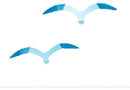
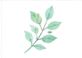
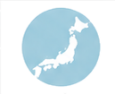
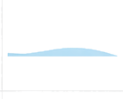
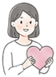

精神科訪問看護に対応。24時間365日、
ひとりで抱え込まない毎日を支えます。
訪問看護ステーションSHARKは、精神疾患のある方や障がいのある方に向けて、ご本人の気持ちに寄り添いながら、服薬管理・ご家族への支援・主治医との連携までサポートします。

CHECK
その不安を、ひとりで抱え込まなくて大丈夫です。
REASON
{{ r.desc }}
SERVICE
{{ s.desc }}
訪問看護ステーションSHARKでは、医療保険での訪問看護に対応しています。自立支援医療制度をご利用いただくことで、自己負担を抑えて訪問看護をご利用いただける場合があります。

大和高田市を拠点に、奈良県全域へ訪問対応しています。精神科訪問看護をご希望の方、ご家族、医療機関・施設関係者様もお気軽にご相談ください。
訪問看護ステーションSHARKでは、利用者様の暮らしに寄り添う看護師を募集しています。訪問看護未経験の方、子育て中の方、ブランクのある方もご相談ください。常勤・非常勤どちらも相談可能です。
COMPANY

ご本人・ご家族・医療機関・施設関係者様からのご相談を受け付けています。
訪問看護の利用を迷っている段階でも、お気軽にお問い合わせください。

相談だけでも
大丈夫です